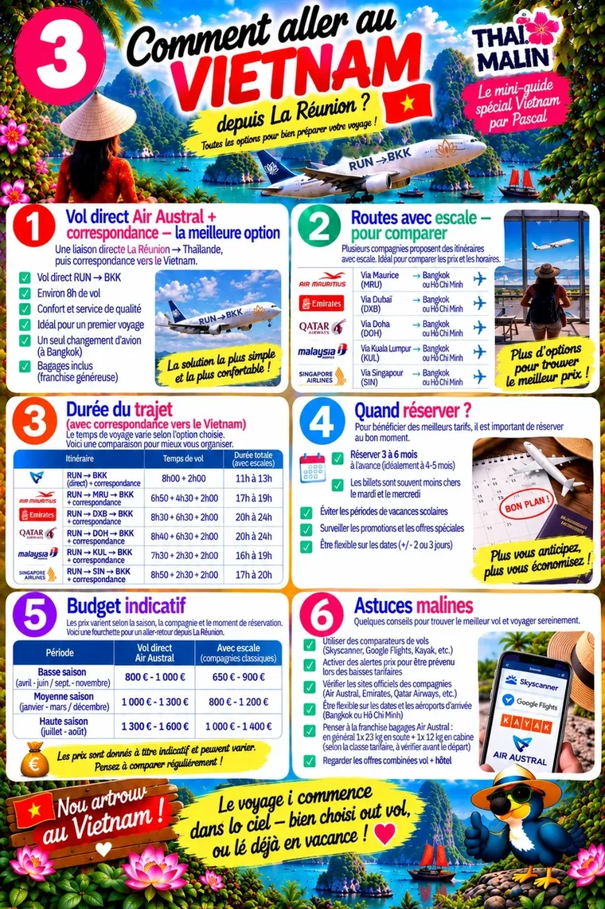
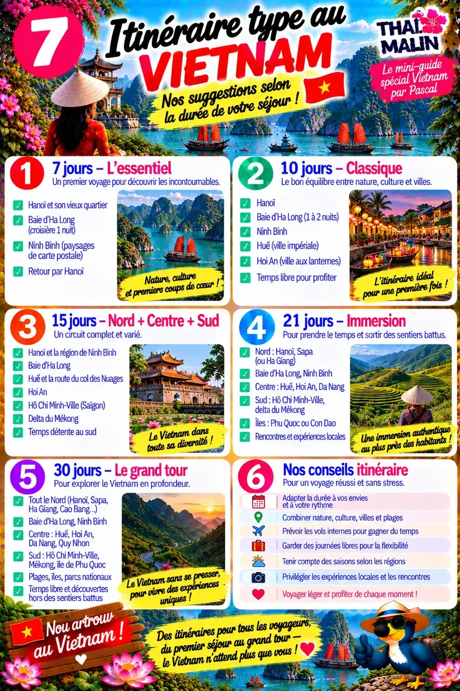
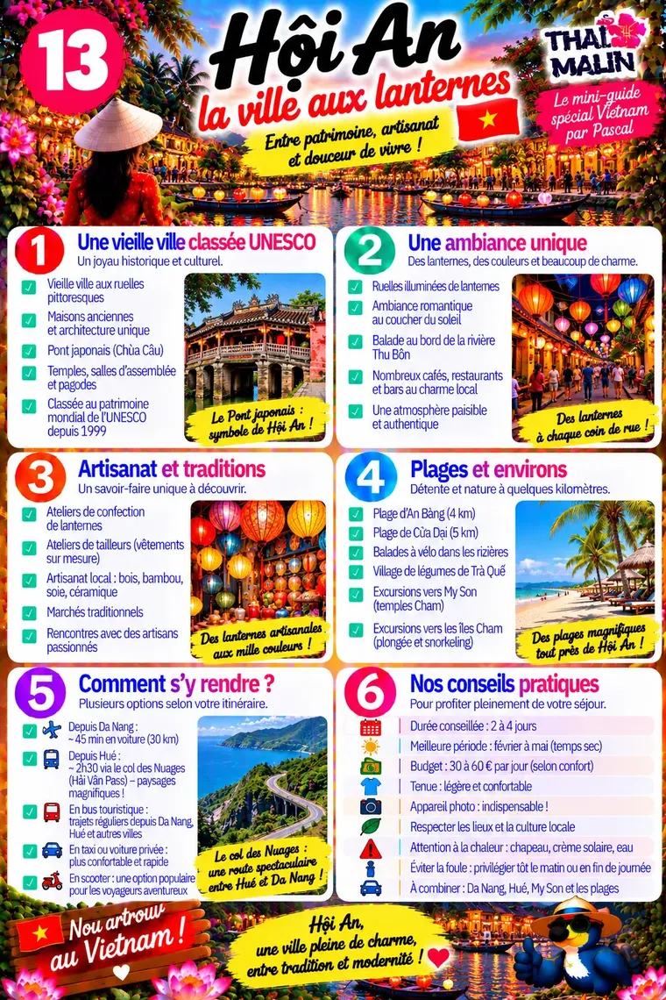

Aperçu gratuit · Édition 2026
🌿 Mini-guide Vietnam
Hanoï, Hội An, Saïgon — nature, culture et évasion
Comment aller au VietnamAperçu 1/3

Itinéraire typeAperçu 2/3

Hội An, la ville aux lanternesAperçu 3/3

Il reste 22 pages à découvrir
Dans le guide complet :
- Hanoï, Baie d’Ha Long, Ninh Binh, Sapa
- Huế, Hội An, Nha Trang, Da Nang
- Hô Chi Minh-Ville et delta du Mékong
- Phú Quốc et Côn Đảo
- Gastronomie vietnamienne
- Shopping et souvenirs
- Kit de départ et centre de réservation
Paiement sécurisé Stripe. Ton code arrive par e-mail juste après l’achat.